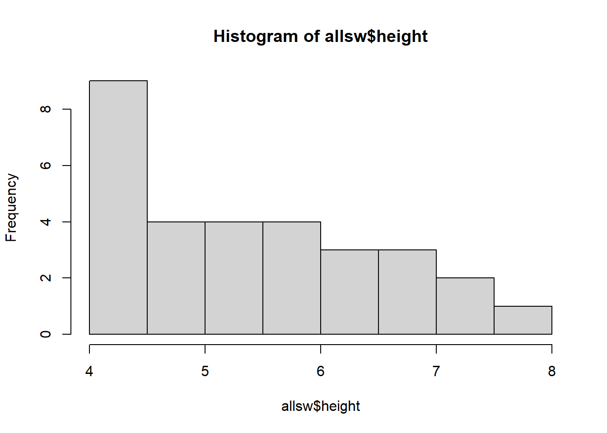
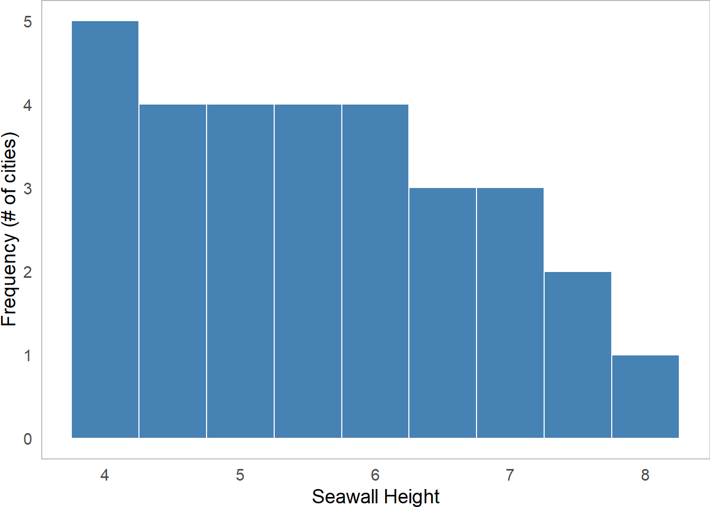
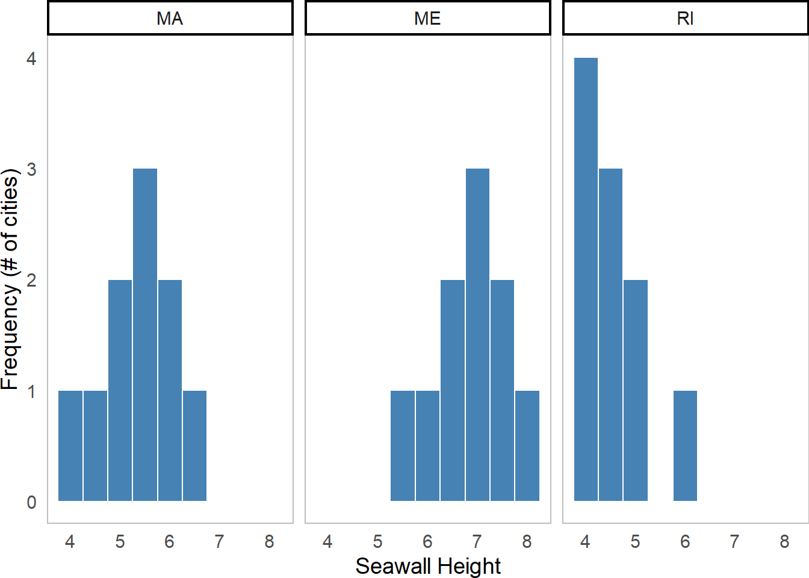
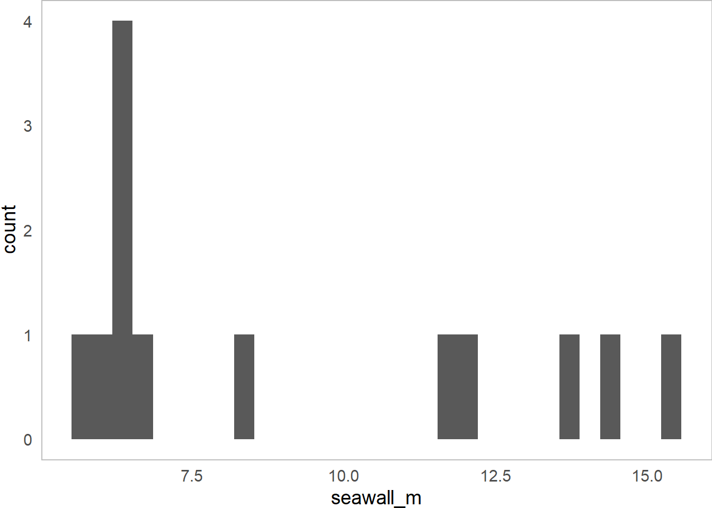

1 Workshop: Coding in R
Welcome to RStudio Cloud! You made it! This document will introduce you to how to start coding in R, using RStudio Cloud. We will use the R statistical coding language frequently in class to conduct analyses and visualization.
Hello world! We are coding in R!
Getting Started
Making an RStudio.Cloud account
We’ll be using RStudio.Cloud, a virtual version of R you can access from any computer with an internet browser (PC, Mac, Chromebook, anything). To get set up, please follow the steps in this short Video playlist!
Accessing your First RStudio.Cloud Tutorial
Today’s tutorial is at the following link: https://timothyfraser.github.io/sysen/workshop_1
Please copy and paste it into your browser url bar!
For a quick visual orientation, take a peek at the image below.
Read and follow along with the instructions on the webpage! Read the tutorial code (below), and then type it in and run it in your R session!
Figure 1.1: Visual Intro to Using RStudio.Cloud
1.1 Introduction to R
The document in your RStudio Cloud project document is an ‘R script.’ (its name ends in .R).
It contains two kinds of text:
‘code’ - instructions to our statistical calculator
‘comments’ - any text that immediately follows a ‘#’ sign.
# For example,
# Comments are ignored by the calculator, so we can write ourselves notes.Notice: 4 windows in R.
Window 1 (upper left): Scripts!
Window 2 (bottom left): Console (this shows the output for our calculator)
Window 3 (upper right): Environment (this shows any data the computer is holding onto for us)
Window 4 (bottom right): Files (this shows our working project folder, our scripts, and any data files.)
A few tips:
To change the background theme (and save your eyes), go to Tools >> Global Options >> Appearance >> Editor Theme >> Dracula
To increase the font size, go to Tools >> Global Options >> Appearance >> Editor Font Size
To make a script, go to File >> New File >> R Script, then save it and name it.
Figure 1.2: Open New Script
Figure 1.3: Save New Script!
Let’s learn to use R!
1.2 Basic Calculations in R
Try highlighting the following with your cursor, and then press CTRL and ENTER simultaneously, or the ‘Run’ button above.
Addition:
1 + 5## [1] 6Subtraction:
5 - 2## [1] 3Multiplication:
2 * 3## [1] 6Division:
15 / 5## [1] 3Exponents:
2^2## [1] 4Square-Roots:
sqrt(4)## [1] 2Order of Operations:
Still applies! Like in math normally, R calculations are evaluated from left to right, prioritizing parentheses, then multiplication and division, then addition and subtraction.
2 * 2 - 5## [1] -1Use Parentheses!
2 * (2 - 5)## [1] -6
LC 1
‘LC’ stands for Learning Check! Our tutorials have questions throughout to give you some short coding challenges to try and work through.
Below is the
questiontab.Read the question, and try to answer it on your own!
Then, click the answer button to see the
answer. (Note: There are often many different ways to code the same thing!)Feeling stumped? You can check the answer, but be sure to code it yourself afterwards!
Question
Try calculating something wild in R! Solve for x below using the commands you just learned in R!
\(x = \sqrt{ (\frac{2 - 5 }{5})^{4} }\)
\(x = (1 - 7)^{2} \times 5 - \sqrt{49}\)
\(x = 2^{2} + 2^{2} \times 2^{2} - 2^{2} \div 2^{2}\)
Answer
Here’s how we coded it! How does yours compare? If your result is different, compare code. What’s different? Be sure to go back and adjust your code so you understand the answer!
- \(x = \sqrt{ (\frac{2 - 5 }{5})^{4} }\)
sqrt( ((2 - 5) / 5)^4 )## [1] 0.36- \(x = (1 - 7)^{2} \times 5 - \sqrt{49}\)
(1 - 7)^2 * 5 - sqrt(49)## [1] 173- \(x = 2^{2} + 2^{2} \times 2^{2} - 2^{2} \div 2^{2}\)
2^2 + 2^2 * 2^2 - 2^2 / 2^2## [1] 19
1.3 Types of Values in R
R accepts 2 type of data:
# Numeric Values
15000## [1] 150000.0005## [1] 5e-04-8222 # notice no commas allowed## [1] -8222and
# Character Strings
"Coding!" # Uses quotation marks## [1] "Coding!""Corgis!" # Can contain anything - numbers, characters, etc.## [1] "Corgis!""Coffee!"## [1] "Coffee!"(Note: R also uses something called factors, which are characters, but have a specific order. We’ll learn them later.)
1.4 Types of Data in R
1.4.1 Values
First, R uses values - which are single numbers or characters.
2 # this is a value## [1] 2"x" # this is also a value## [1] "x"You can save a value as a named object in the R Environment.
That means, we tell R to remember that whenever you use a certain name, it means that value.
To name something as an object, use an arrow!
myvalue <- 2Now let’s highlight and press CTRL ENTER on myvalue (or the Mac Equivalent).
myvalue## [1] 2Notice how it’s listed in the R Environment (upper right), and how it outputs as 2 in the console?
We can do operations too!
secondvalue <- myvalue + 2 # add 2 to myvalue
secondvalue # check new value - oooh, it's 4!## [1] 4We can also overwrite old objects with new objects.
myvalue <- "I overwrote it!"
myvalue## [1] "I overwrote it!"And we can also remove objects from the Environment, with remove().
remove(myvalue, secondvalue)1.4.2 Vectors
Second, R contains values in vectors, which are sets of values.
# This is a numeric vector
c(1, 4, 8) # is the same as 1, 4, 8## [1] 1 4 8and…
# This is a character vector
c("Boston", "New York", "Los Angeles")## [1] "Boston" "New York" "Los Angeles"But if you combine numeric and character values in one vector…
# This doesn't work - R immediately makes it into a character vector
c(1, "Boston", 2)## [1] "1" "Boston" "2"Why do we use vectors? Because you can do mathematical operations on entire vectors of values, all at once!
c(1,2,3,4) * 2 # this multiplies each value by 2!## [1] 2 4 6 8c(1,2,3,4) + 2 # this adds 2 to each value!## [1] 3 4 5 6We can save vectors as objects too!
# Here's a vector of (hypothetical) seawall heights in 10 towns.
myheights <- c(4, 4.5, 5, 5, 5, 5.5, 5.5, 6, 6.5, 6.5)
# And here's a list of hypothetical names for those towns
mytowns <- c("Gloucester", "Newburyport", "Provincetown",
"Plymouth", "Marblehead", "Chatham", "Salem",
"Ipswich", "Falmouth", "Boston")
# And here's a list of years when those seawalls were each built.
myyears <- c(1990, 1980, 1970, 1930, 1975, 1975, 1980, 1920, 1995, 2000)Plus, we can still do operations on entire vectors!
myyears + 1## [1] 1991 1981 1971 1931 1976 1976 1981 1921 1996 20011.4.3 Dataframes
Third, R bundles vectors into data.frames.
# Using the data.frame command, we make a data.frame,
data.frame(
height = myheights, # length 10
town = mytowns, # length 10
year = myyears) # length 10## height town year
## 1 4.0 Gloucester 1990
## 2 4.5 Newburyport 1980
## 3 5.0 Provincetown 1970
## 4 5.0 Plymouth 1930
## 5 5.0 Marblehead 1975
## 6 5.5 Chatham 1975
## 7 5.5 Salem 1980
## 8 6.0 Ipswich 1920
## 9 6.5 Falmouth 1995
## 10 6.5 Boston 2000And inside, we put a bunch of vectors of EQUAL LENGTHS, giving each vector a name.
And when it outputs in the console, it looks like a spreadsheet!
BECAUSE ALL SPREADSHEETS ARE DATAFRAMES!
AND ALL COLUMNS ARE VECTORS!
AND ALL CELLS ARE VALUES!
Actually, we can make data.frames into objects too!
# Let's name our data.frame about seawalls 'sw'
sw <- data.frame(
height = myheights,
town = mytowns,
year = myyears) # Notice this last parenthesis; very important
# Check the contents of sw!
sw## height town year
## 1 4.0 Gloucester 1990
## 2 4.5 Newburyport 1980
## 3 5.0 Provincetown 1970
## 4 5.0 Plymouth 1930
## 5 5.0 Marblehead 1975
## 6 5.5 Chatham 1975
## 7 5.5 Salem 1980
## 8 6.0 Ipswich 1920
## 9 6.5 Falmouth 1995
## 10 6.5 Boston 2000Although, we could do this too, and it would be equivalent:
sw <- data.frame(
# It's okay to split code across multiple lines.
# It keeps things readable.
height = c(4, 4.5, 5, 5, 5,
5.5, 5.5, 6, 6.5, 6.5),
town = c("Gloucester", "Newburyport", "Provincetown",
"Plymouth", "Marblehead", "Chatham", "Salem",
"Ipswich", "Falmouth", "Boston"),
year = c(1990, 1980, 1970, 1930, 1975,
1975, 1980, 1920, 1995, 2000))
# Let's check out our dataframe!
sw## height town year
## 1 4.0 Gloucester 1990
## 2 4.5 Newburyport 1980
## 3 5.0 Provincetown 1970
## 4 5.0 Plymouth 1930
## 5 5.0 Marblehead 1975
## 6 5.5 Chatham 1975
## 7 5.5 Salem 1980
## 8 6.0 Ipswich 1920
## 9 6.5 Falmouth 1995
## 10 6.5 Boston 2000But what if we want to work with the vectors again?
We can use the ‘$’ sign to say, ‘grab the following vector from inside this data.frame.’
sw$height## [1] 4.0 4.5 5.0 5.0 5.0 5.5 5.5 6.0 6.5 6.5We can also do operations on that vector from within the dataframe.
sw$height + 1## [1] 5.0 5.5 6.0 6.0 6.0 6.5 6.5 7.0 7.5 7.5We can also update values, like the following:
# sw$height <- sw$height + 1
# I've put this in comments, since I don't actually want to do it (it'll change our data)
# but good to know, right?
LC 2
Question
How would you make your own data.frame?
Please make up a data.frame of with 3 vectors and 4 values each. Make 1 vector numeric and 2 vectors character data. How many rows are in that data.frame?
Answer
Here’s my example!
# Make a data.frame called 'mayhem'
mayhem <- data.frame(
# make a character vector of 4 dog by their names
dogs = c("Mocha", "Domino", "Latte", "Dot"),
# Classify the type of dog as a character vector
types = c("corgi", "dalmatian", "corgi", "dalmatian"),
# Record the number of treats eaten per year per dog
treats_per_year = c(5000, 3000, 2000, 10000))
# View the resulting 'mayhem'!
mayhem## dogs types treats_per_year
## 1 Mocha corgi 5000
## 2 Domino dalmatian 3000
## 3 Latte corgi 2000
## 4 Dot dalmatian 10000
1.5 Common Functions in R
We can also run functions that come pre-installed to analyze vectors.
These include: mean(), median(), sum(), min(), max(), range(), quantile(), sd(), var(), and length().
Figure 1.4: Figure 3: Descriptive Stats function Cheatsheet!
1.5.1 Measures of Central Tendency
mean(sw$height) # the mean seawall height among these towns## [1] 5.35median(sw$height) # the median seawall height## [1] 5.25sum(sw$height) # total meters of seawall height! (weird number, but okay)## [1] 53.51.5.2 Measures of Dispersion
min(sw$height) # smallest seawall height## [1] 4max(sw$height) # tallest seawall height## [1] 6.5range(sw$height) # range of seawalls (min & max)## [1] 4.0 6.5quantile(sw$height, probs = 0.25) # 25th percentile## 25%
## 5quantile(sw$height, probs = 0.75) # 75th percentile## 75%
## 5.875sd(sw$height) # the standard deviation of seawall heights## [1] 0.8181958var(sw$height) # the variance of seawall heights (= standard deviation squared)## [1] 0.66944441.6 6. Missing Data
Sometimes, data.frames include missing data for a case/observation. For example, let’s say there is an 11th town, where the seawall height is unknown.
# We would write:
mysw <- c(4, 4.5, 5, 5, 5,
5.5, 5.5, 6, 6.5, 6.5, NA) # see the 'NA' for non-applicableIf you run mean(mysw) now, R doesn’t know how to add 6.5 + NA.
The output will become NA instead of 5.35.
mean(mysw)## [1] NATo fix this, we can add an ‘argument’ to the function, telling it to omit NAs from the calculation.
mean(mysw, na.rm = TRUE) # short for, 'remove NAs'## [1] 5.35Pretty cool, no?
Each function is unique, often made by different people, so only these functions have na.rm as an argument.
LC 3
Question
Jun Kanda (2015) measured max seawall heights (seawall_m) in 13 Japanese towns (town) after the 2011 tsunami in Tohoku, Japan, compared against the height of the tsunami wave (wave_m). Using this table, please code and answer the questions below.
| town | seawall_m | wave_m |
|---|---|---|
| Kuji South | 12.0 | 14.5 |
| Fudai | 15.5 | 18.4 |
| Taro | 13.7 | 16.3 |
| Miyako | 8.5 | 11.8 |
| Yamada | 6.6 | 10.9 |
| Ohtsuchi | 6.4 | 15.1 |
| Tohni | 11.8 | 21.0 |
| Yoshihama | 14.3 | 17.2 |
| Hirota | 6.5 | 18.3 |
| Karakuwa East | 6.1 | 14.4 |
| Onagawa | 5.8 | 18.0 |
| Souma | 6.2 | 14.5 |
| Nakoso | 6.2 | 7.7 |
Reproduce this table as a data.frame in R, and save it as an object named
jp.How much greater was the mean height of the tsunami than the mean height of seawalls?
Evaluate how much these heights varied on average among towns. Did seawall height vary more than tsunami height? How much more/less?
Answer
- Reproduce this table as a data.frame in R, and save it as an object named
jp.
# Make a dataframe named jp,
jp <- data.frame(
# containing a character vector of 13 town names,
town = c("Kuji South", "Fudai", "Taro", "Miyako", "Yamada", "Ohtsuchi", "Tohni",
"Yoshihama", "Hirota", "Karakuwa East", "Onagawa", "Souma", "Nakoso"),
# and a numeric vector of 13 max seawall heights in meters
seawall_m = c(12.0, 15.5, 13.7, 8.5, 6.6, 6.4, 11.8, 14.3, 6.5, 6.1, 5.8, 6.2, 6.2),
# and a numeric vector of 13 max tsunami heights in meters
wave_m = c(14.5, 18.4, 16.3, 11.8, 10.9, 15.1, 21.0, 17.2, 18.3, 14.4, 18.0, 14.5, 7.7)
)
# View contents!
jp## town seawall_m wave_m
## 1 Kuji South 12.0 14.5
## 2 Fudai 15.5 18.4
## 3 Taro 13.7 16.3
## 4 Miyako 8.5 11.8
## 5 Yamada 6.6 10.9
## 6 Ohtsuchi 6.4 15.1
## 7 Tohni 11.8 21.0
## 8 Yoshihama 14.3 17.2
## 9 Hirota 6.5 18.3
## 10 Karakuwa East 6.1 14.4
## 11 Onagawa 5.8 18.0
## 12 Souma 6.2 14.5
## 13 Nakoso 6.2 7.7- How much greater was the mean height of the tsunami than the mean height of seawalls?
# Get mean of wave height
mean(jp$wave_m)## [1] 15.23846The average wave was 15.24 meters tall.
# Get mean of seawall height
mean(jp$seawall_m)## [1] 9.2The average seawall was 9.2 meters tall.
# Get difference in mean seawall height
mean(jp$wave_m) - mean(jp$seawall_m)## [1] 6.038462The average wave was 6.04 meters taller than the average seawall.
- Evaluate how much these heights varied on average among towns. Did seawall height vary more than tsunami height? How much more/less?
# Get standard deviation of wave height
sd(jp$wave_m)## [1] 3.587603On average, wave height varied by 3.59 meters.
# Get standard deviation of seawall height
sd(jp$seawall_m)## [1] 3.675368On average, seawall height varied by 3.68 meters.
# Get difference
sd(jp$wave_m) - sd(jp$seawall_m)## [1] -0.08776516That means wave height varied by -0.09 meters less than seawall height.
1.7 Packages
1.7.1 Using Packages
Some functions come pre-built into R, but lots of people have come together to build ‘packages’ of functions that help R users all over the world do more, cool things, so we don’t each have to ‘reinvent the wheel.’ ggplot2, which we use below, is one of these!
1.7.2 Installing Packages
We can use the library() function to load a package (like fipping an ‘on’ switch for the package). After loading it, R will recognize that package’s functions when you run them!
But if you try to load a package that has never been installed on your computer, you might get this error:
library(ggplot2)Error in library(ggplot2) : there is no package called ‘ggplot2’
In this case, we need to install those packages (only necessary once), using install.packages(). (If a message pops up, just accept ‘Yes’.)
install.packages(c("ggplot2", "dplyr"))After a successful install, you’ll get a message like this:
==================================================
downloaded 1.9 MB
* installing *binary* package ‘ggplot2’ ...
* DONE (ggplot2)
* installing *binary* package ‘dplyr’ ...
* DONE (dplyr)
The downloaded source packages are in
‘/tmp/RtmpefCnYe/downloaded_packages’1.8 Visualizing Data with Histograms
The power of R is that you can process data, calculate statistics, and visualize it all together, very quickly. We can do this using hist() and geom_histogram(), among other functions.
1.8.1 hist()
For example, let’s imagine that we had seawall height data from cities in several states. We might want to compare those states.
# Create 30 cities, ten per state (MA, RI, ME)
allsw <- data.frame(
height = c(4, 4.5, 5, 5, 5.5, 5.5, 5.5, 6, 6, 6.5,
4, 4,4, 4, 4.5, 4.5, 4.5, 5, 5, 6,
5.5, 6, 6.5, 6.5, 7, 7, 7, 7.5, 7.5, 8),
states = c("MA","MA","MA","MA","MA","MA","MA","MA","MA","MA",
"RI","RI","RI","RI","RI","RI","RI","RI","RI","RI",
"ME","ME","ME","ME","ME","ME","ME","ME","ME","ME"))
# Take a peek!
allsw## height states
## 1 4.0 MA
## 2 4.5 MA
## 3 5.0 MA
## 4 5.0 MA
## 5 5.5 MA
## 6 5.5 MA
## 7 5.5 MA
## 8 6.0 MA
## 9 6.0 MA
## 10 6.5 MA
## 11 4.0 RI
## 12 4.0 RI
## 13 4.0 RI
## 14 4.0 RI
## 15 4.5 RI
## 16 4.5 RI
## 17 4.5 RI
## 18 5.0 RI
## 19 5.0 RI
## 20 6.0 RI
## 21 5.5 ME
## 22 6.0 ME
## 23 6.5 ME
## 24 6.5 ME
## 25 7.0 ME
## 26 7.0 ME
## 27 7.0 ME
## 28 7.5 ME
## 29 7.5 ME
## 30 8.0 MEEvery vector is a distribution - a range of low to high values. We can use the hist() function to quickly visualize a vector’s distribution.
hist(allsw$height)
1.8.2 geom_histogram() in ggplot2
hist() is great for a quick check, but for anything more complex, we’re going to use ggplot2, the most popular visualization package in R.
# Load ggplot2 package
library(ggplot2)
# Tell the ggplot function to...
ggplot(
# draw data from the 'allsw' data.frame
data = allsw,
# and 'map' the vector 'height' to be an 'aes'thetic on the 'x'-axis.
mapping = aes(x = height)) +
# make histograms of distribution,
geom_histogram(
# With white outlines
color = "white",
# With blue inside fill
fill = "steelblue",
# where every half meter gets a bin (binwidth = 0.5)
binwidth = 0.5) +
# add labels
labs(x = "Seawall Height", y = "Frequency (# of cities)") 
Looks much nicer, right? Lots more code, but lots more options for customizing. We’ll learn ggplot2 more over this term, and it will become second nature in time! (Just takes practice!)
The value of ggplot2 really comes alive when we make complex visuals. For example, our data allsw$height essentially contains 3 vectors, one per state; one for MA, one for RI, one for ME. Can we visualize each of these vectors’ distributions using separate histograms?
# Repeat code from before...
ggplot(data = allsw, mapping = aes(x = height)) +
geom_histogram(color = "white", fill = "steelblue", binwidth = 0.5) +
labs(x = "Seawall Height", y = "Frequency (# of cities)") + # don't forget the '+'!
# But also
## Split into panels by state!
facet_wrap(~states)
We can now see, according to our hypothetical example, that states host different distributions of seawall heights.
Massachusetts (MA) has lower seawalls, evenly distributed around 5.5 m. Maine (ME) has higher seawalls, skewed towards 7 m. Rhode Island (RI) has lower seawalls, skewed towards 4 m.
LC 4
Question
Challenge: Please make a histogram of Jun Kanda’s sample of seawall heights (seawall_m) in the jp object from LC 3.
First, make a histogram using the
hist()function.Then, try and use the
geom_histogram()function fromggplot2!
Answer
- First, make a histogram using the
hist()function.
# Tell R to make a histogram from the 'seawall_m' vector inside 'jp'!
hist(jp$seawall_m)
- Then, try and use the
geom_histogram()function fromggplot2!
# Tell ggplot to grab the 'seawall_m' vector from the 'jp' data.frame,
# and make a histogram!
ggplot(data = jp, mapping = aes(x = seawall_m)) +
geom_histogram()
Looks pretty weird, huh? hist() automatically chooses the binwidth, but ggplot() gives us more control over the whole plot. We’ll learn more about this soon!
1.9 Wrap-up
1.9.1 Next Steps
Throughout the rest of the course, we’re going to advance each of these skills:
working with types of data in R
calculating meaningful statistics in R
visualizing meaningful trends in R
1.9.2 Advice
Be sure to clear your environment often.
That means, using remove() or the broom tool in the upper right hand corner.
remove(allsw, mysw, sw, myheights, mytowns, myyears)You can clean your console too, using broom in console’s upper right corner.
Save often. (Control + Save usually works on PC.)
You can download files using more / export, or upload them.
You’ll be a rockstar at using R in no time! Stay tuned for our next Workshop!
1.9.3 Troubleshooting:
If your session freezes, go to ‘Session’ >> ‘Restart R.’
If that doesn’t work, go to ‘Session’ >> ‘Terminate’.
If that doesn’t work, click on the elipsis (…) in the white banner at the top, and select Relaunch Project.
If that doesn’t work, let me know!
Having problems? There are three causes of most all problems in R.
there’s a missing parenthesis or missing quotation mark in one’s code.
You’re using a function from a package that needs to be loaded (we’ll talk about this in later workshops).
Too much data in your environment is causing R to crash. Clear the environment.